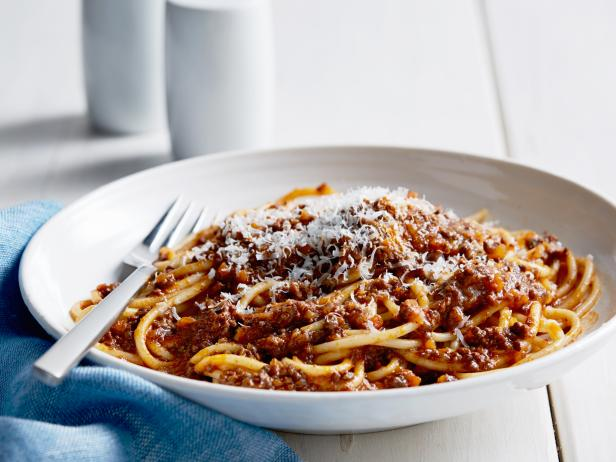

Pasta Bolognese

Description
Bolognese sauce is basically a sauce made with ground beef, onions, tomatoes and fresh herbs, and served
with pasta. It’s an Italian meat sauce that originated from the city of Bologna.
However, it’s more than just beef, onions and a jar of spaghetti sauce.
It’s about the depth of flavor you get from cooking all the ingredients in stages and letting the sauce
simmer until it becomes thick, rich and hearty.
Ingredients
- ¼ cup extra-virgin olive oil
- 1 onion (medium finely diced)
- 1 carrot (medium finely diced)
- 1 celery rib (medium finely diced)
- 2 ounces pancetta (thickly sliced, finely diced)
- ½ pound ground beef
- ½ pound ground veal
- ¼ pound ground pork
- 2 cloves garlic (large chopped)
- ¾ cup dry white wine
- 28 ounces peeled Italian tomatoes
- 1 cup chicken stock or canned low-sodium broth
- ½ teaspoon dried thyme
- 1 bay leaf
- Salt and freshly ground pepper
- ¼ cup heavy cream
- 2 pounds penne rigate
- Freshly grated Parmesan (for serving)
Steps
- Bring a large pot of salted water to a boil. Add pasta and cook al dente according to package instructions; drain. Reserve ½ cup pasta water
- Heat the olive oil in a large deep saute pan. Add the beef and season with salt and pepper. Brown the beef and break it into smaller pieces with the back of a wooden spoon until cooked through.
- Add onions and garlic; and season with oregano, basil and crushed red pepper. Saute for about 5 minutes until they soften. Add crushed tomatoes and tomato paste and pasta water. Mix to combine, bring mixture to a boil and then simmer on low covered for 30 minutes.
- Toss the pasta with the bolognese sauce and top with fresh basil, if desired.